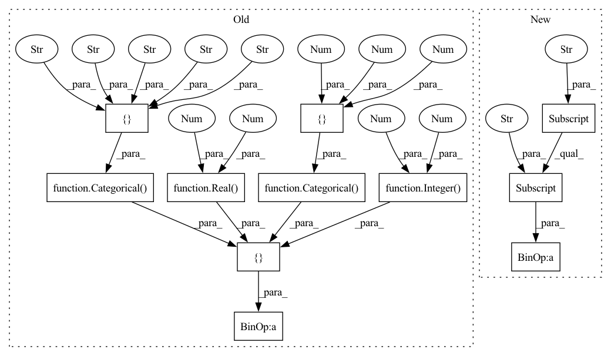

Pattern ID :20408

Before Change
**kwargs)}
def model_CNN(self, **kwargs):
self.param_space = [
Integer(8, 128, name="filters"),
Categorical([2,3,4,5], name="kernel_size"),
Categorical([1, 2, 3], name="num_layers"),
Real(0.0, 0.4, name="dropout"),
Categorical(["relu", "leakyrelu", "elu", "tanh", "sigmoid"],
name="activation")
] + self.static_space
self.x0 = [32, 2, 1, 0.0, "relu"] + self.static_x0
return {"model": CNN(input_shape=self.input_shape,
After Change
def model_CNN(self, **kwargs):
1D CNN based model
self.param_space = self.spaces["CNN"]["param_space"] + self.static_space
self.x0 = self.spaces["CNN"]["x0"] + self.static_x0
_kwargs = {}
In pattern: SUPERPATTERN
Frequency: 6
Non-data size: 11
Instances
Fragment ID: 66095089
Project Name: atrcheema/dl4seq
Commit Name: 1586b81440064a0ab2161c688e9ff48319365b6e
Time: 2022-04-24
Author: ather_abbas786@yahoo.com
File Name: ai4water/experiments/_dl.py
M Class Name: DLRegressionExperiments
N Class Name: DLRegressionExperiments
M Method Name: model_CNN(1)
N Method Name: model_CNN(1)
M Parent Class: Experiments
N Parent Class: Experiments
M File Name: ai4water/experiments/_dl.py
N File Name: ai4water/experiments/_dl.py
M Start Line: 179
M End Line: 190
N Start Line: 184
N End Line: 194
'>
Before Change
def model_MLP(self, **kwargs):
multi-layer perceptron model
self.param_space = [
Integer(8, 128, name="units"),
Categorical([1,2,3], name="num_layers"),
Real(0.0, 0.4, name="dropout"),
Categorical(["relu", "linear", "leakyrelu", "elu", "tanh", "sigmoid"],
name="activation")
] + self.static_space
self.x0 = [32, 1, 0.0, "relu"] + self.static_x0
After Change
def model_MLP(self, **kwargs):
multi-layer perceptron model
self.param_space = self.spaces["MLP"]["param_space"] + self.static_space
self.x0 = self.spaces["MLP"]["x0"] + self.static_x0
_kwargs = {}
'>
Fragment ID: 66095072
Project Name: atrcheema/ai4water
Commit Name: 1586b81440064a0ab2161c688e9ff48319365b6e
Time: 2022-04-24
Author: ather_abbas786@yahoo.com
File Name: ai4water/experiments/_dl.py
M Class Name: DLRegressionExperiments
N Class Name: DLRegressionExperiments
M Method Name: model_MLP(1)
N Method Name: model_MLP(1)
M Parent Class: Experiments
N Parent Class: Experiments
M File Name: ai4water/experiments/_dl.py
N File Name: ai4water/experiments/_dl.py
M Start Line: 152
M End Line: 163
N Start Line: 156
N End Line: 165
'>
Before Change
**kwargs)}
def model_LSTM(self, **kwargs):
self.param_space = [
Integer(8, 128, name="units"),
Categorical([1, 2, 3], name="num_layers"),
Real(0.0, 0.4, name="dropout"),
Categorical(["relu", "leakyrelu", "elu", "tanh", "sigmoid"],
name="activation")
] + self.static_space
self.x0 = [32, 1, 0.0, "relu"] + self.static_x0
return {"model": LSTM(input_shape=self.input_shape,
After Change
def model_LSTM(self, **kwargs):
LSTM based model
self.param_space = self.spaces["LSTM"]["param_space"] + self.static_space
self.x0 = self.spaces["LSTM"]["x0"] + self.static_x0
_kwargs = {}
'>
Fragment ID: 66095073
Project Name: atrcheema/ai4water
Commit Name: 1586b81440064a0ab2161c688e9ff48319365b6e
Time: 2022-04-24
Author: ather_abbas786@yahoo.com
File Name: ai4water/experiments/_dl.py
M Class Name: DLRegressionExperiments
N Class Name: DLRegressionExperiments
M Method Name: model_LSTM(1)
N Method Name: model_LSTM(1)
M Parent Class: Experiments
N Parent Class: Experiments
M File Name: ai4water/experiments/_dl.py
N File Name: ai4water/experiments/_dl.py
M Start Line: 166
M End Line: 176
N Start Line: 170
N End Line: 179